从零完成出海新站的 Google Analytics 4（GA4） 与 Google Search Console（GSC） 全套配置：创建 GA4 账号与数据流、将 G- 衡量 ID 写入站点代码并部署、无痕窗口触发 Cookie 同意与实时报表验证、将留存期延长至 14 个月、通过 Cloudflare 一键授权验证 GSC 域名所有权、提交 sitemap.xml，最后将 GSC 与 GA4 双向关联。
核心原则：代码接入只需要 G- 开头的衡量 ID（如 G-BL3MDRQG5G），不要贴整段 gtag 代码，也不要装 Google Tag Manager。 站点模板已内置 Consent Mode v2 隐私横幅，仅在访客点击 Accept 后才加载 gtag.js 并发送 collect 请求（返回 204）。
完成标准（6 项全部打勾才算跑通）： ① site.ts 填入 ga4Id 并完成 npm run deploy；② 无痕窗口点 Accept 后 Network 出现 collect?v=2...（状态码 204）；③ GA4「实时概览 / 页面实时浏览情况」能看到活跃用户 1；④ GA4 事件与用户数据保留期均改为 14 个月并保存；⑤ GSC 通过 Cloudflare 一键授权验证网域并提交 sitemap.xml；⑥ GA4「产品关联 → Search Console 关联」显示绿色的链接已创建。
1. 创建 GA4 账号与媒体资源（向导第 1–4 步）
打开 analytics.google.com 进入创建向导。前四步依次配置顶层账号、站点媒体资源、商家画像与业务目标。
1.1 账号名称：填品牌名，不要填个人邮箱
账号是顶层容器（一个账号下可挂多个站点的媒体资源）。建议填品牌名（如 Hit The Road Dude AI），不要填个人 Gmail 邮箱，也不要留默认占位文字。
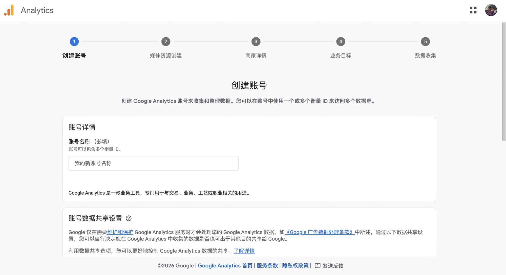
图注：创建账号页：账号名称填品牌名（如 Hit The Road Dude AI），下方数据共享设置保持默认即可。
| 字段 | 建议填写值 | 为什么这样填 |
|---|---|---|
| 账号名称 | Hit The Road Dude AI | 顶层容器名称，不对外公开；切勿填个人邮箱 |
| 媒体资源名称 | hittheroaddudeai.fun | 直接填域名，多站切换时一眼能认出 |
| 报告时区 | 美国 - 洛杉矶时间 (GMT-07:00) | 主受众在北美，按美西时间切自然日 |
| 币种 | 美元 (USD - $) | 必须与积分包/订阅定价币种一致，否则收入金额会被换算错 |
1.2 媒体资源：填裸域名、选美西时区与美元（USD）
媒体资源对应单个网站。名称直接填域名 hittheroaddudeai.fun，报告时区选美国洛杉矶，币种务必选 美元 (USD)。
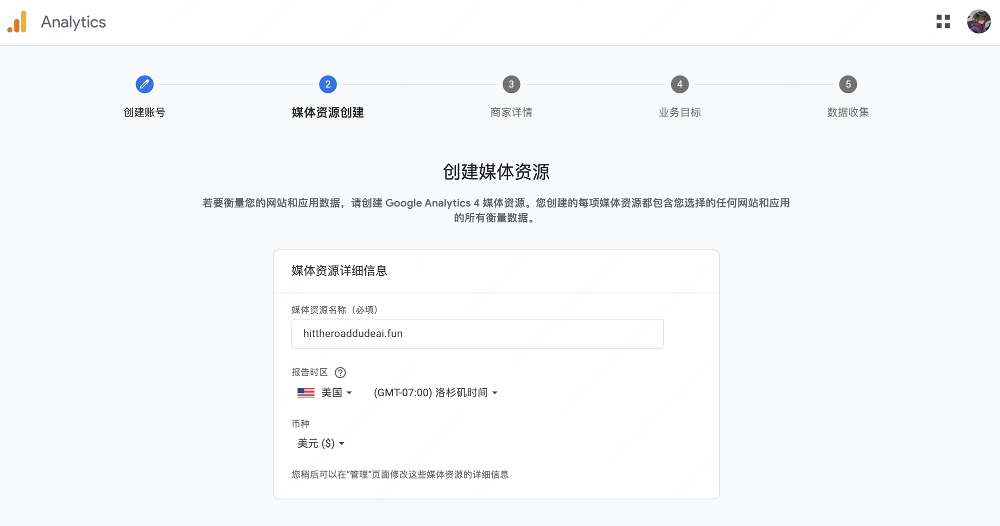
图注：创建媒体资源页：名称填域名，时区选美国洛杉矶，币种选美元（USD）。
1.3 商家详情：选行业与规模
行业类别选「艺术与娱乐」或「技术」，商家规模选「小型 - 1 至 10 名员工」。这里只影响默认报表模板，不影响任何数据采集。
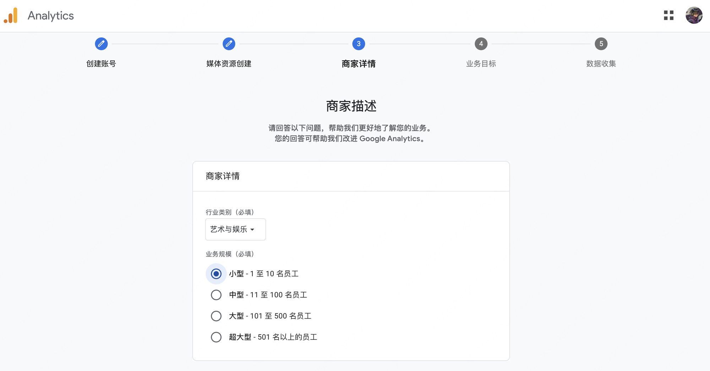
图注：商家详情页：选「艺术与娱乐」与「小型 - 1 至 10 名员工」。
1.4 业务目标：勾选核心转化目标
业务目标决定左侧导航默认生成哪些预设报表。推荐勾选「发掘潜在客户」与「提高销售额」（即使四个全勾也不会报错，保持现状即可，无需回头修改）。
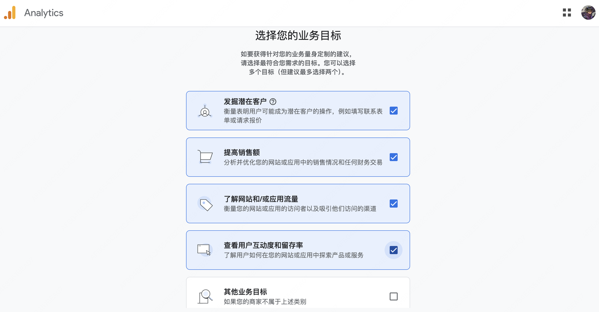
图注：业务目标页：决定左侧菜单预设模板，不影响底层事件采集。
1.5 接受服务条款与 GDPR 数据处理条款
弹窗中勾选「按照 GDPR 的要求，我也接受《数据处理条款》」，点击 我接受 进入数据流配置。
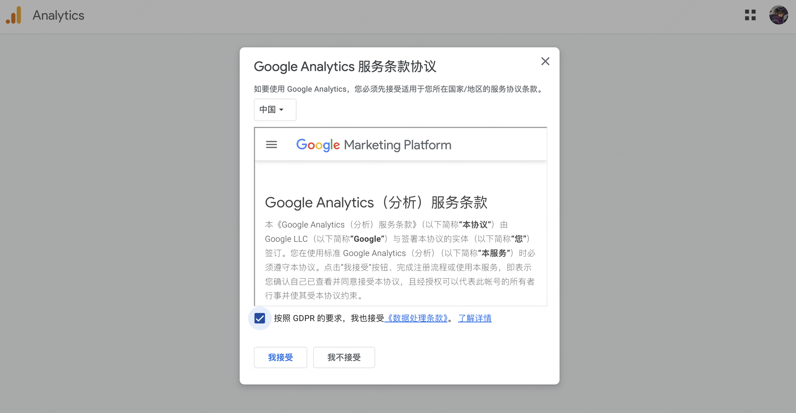
图注：服务条款弹窗：勾选 GDPR 数据处理条款并点「我接受」。
2. 配置网站数据流与增强衡量（向导第 5 步）
平台类型选择 网站（Web），输入正式域名 hittheroaddudeai.fun，数据流名称填 Web — hittheroaddudeai.fun，保持「增强型衡量」开启。
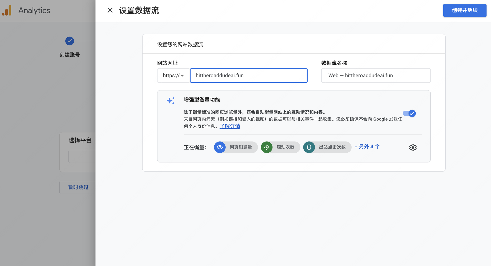
图注：设置网站数据流：填好正式域名与数据流名称，点击右侧齿轮可查看增强型衡量项。
2.1 增强型衡量：千万不要关掉第一项「网页浏览量」
点开增强型衡量齿轮可以看到 7 个开关。第一项 网页浏览量（Page views） 置灰且圆点在右侧，代表它是默认常开的基础项（SPA 路由跳转全靠它统计 page_view）。如果没有站内搜索框，可以把「网站搜索」关掉，其余保持默认开启即可。
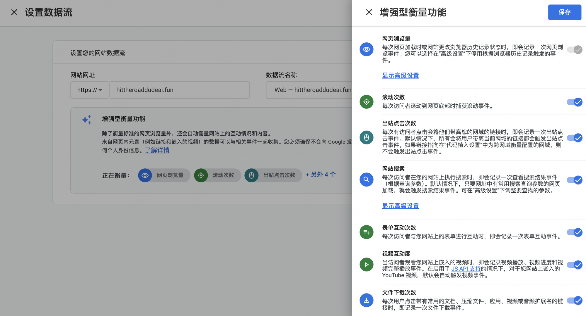
图注：增强型衡量面板：第一项「网页浏览量」圆点在右代表已开启；无站内搜索时可关掉「网站搜索」。
2.2 复制 G- 开头的衡量 ID（忽略顶部黄色警告）
创建完数据流后，详情页会同时展示「数据流 ID（纯数字）」和「衡量 ID（G- 开头）」。我们只需要复制 G-BL3MDRQG5G 这个衡量 ID。不要点「查看代码说明」去装 Google Tag Manager，此时顶部提示「您的网站尚未启用数据收集功能」属于完全正常的初始状态。
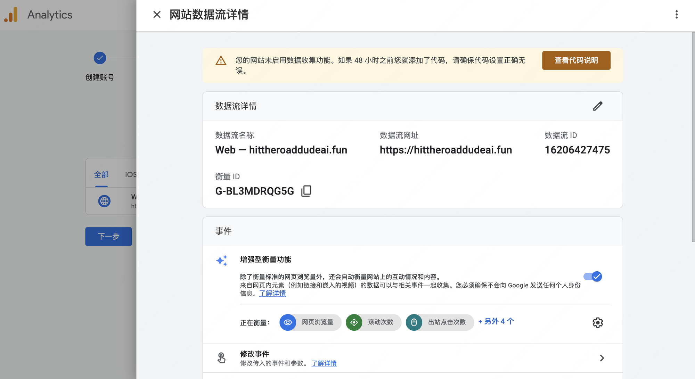
图注：网站数据流详情页：只需复制右上角 G- 开头的衡量 ID（G-BL3MDRQG5G）；顶部黄色提示在站点接入收到数据后会自动消失。
3. 站点代码接入与线上实时验证
拿到 G- 衡量 ID 后，回到站点仓库修改 src/config/site.ts 中的 analytics.ga4Id，然后执行部署：
// src/config/site.ts
analytics: {
ga4Id: 'G-BL3MDRQG5G',
cfBeaconToken: '',
},
# 终端运行校验并发布上线
npm run typecheck && npm test
npm run deploy3.1 无痕窗口打开网站并点击 Accept
部署完成后，用浏览器打开无痕窗口访问 https://hittheroaddudeai.fun。此时页面底部会自动弹出 Analytics cookies 隐私同意横幅。必须点击 Accept 按钮——因为站点遵循 Consent Mode v2，在访客点同意前不会加载 gtag.js。
图注：无痕窗口访问首页自动弹出 Analytics cookies 横幅，点击 Accept 才会加载 GA4 脚本。
3.2 检查浏览器 Network 面板确认 204 上报成功
按 F12（或右键检查）切到 Network（网络） 面板，在过滤框输入 G-BL3MDRQG5G。只要看到两条记录：① js?id=G-BL3MDRQG5G 状态码 200（脚本加载成功）；② collect?v=2&tid=G-BL3M... 状态码 204（数据已成功送达 Google 服务器），就证明前端上报已经 100% 跑通。
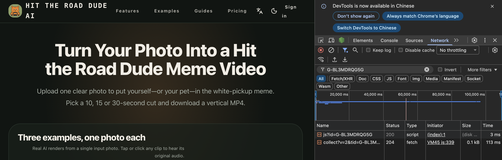
图注：Network 面板出现 js?id=G-BL3MDRQG5G (200) 与 collect?v=2... (204)，代表浏览器已将访问事件发给 Google。
3.3 为什么点完 Accept 却在 GA4「报告概况」里看不到数据？
实操高频误区： 很多时候看 Network 明明已经有 204 请求了，但切回 GA4 点左侧「报告」却只看到下图「创建报告概况（选择模板）」，以为没收到数据。其实是因为当前停在了「报告概况」（非实时汇总报表需要 24–48 小时才会出数），还没点进它下方的实时概览或页面实时浏览情况。
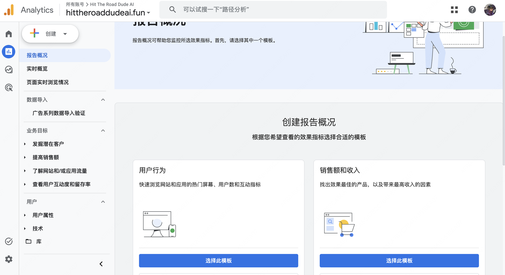
图注：停在「报告概况」看不到实时访问（这里顺手点左侧「用户行为 → 选择此模板」即可）；看实时数据要点左侧菜单第二项「实时概览」或第三项「页面实时浏览情况」。
3.4 切到「页面实时浏览情况」确认活跃用户为 1
点击左侧菜单的 实时概览 或 页面实时浏览情况，立刻就能看到「活跃用户 1、浏览次数 1」以及受访路径 /。看到这个画面，说明 GA4 从网页端到 Google 后台已经彻底调通。
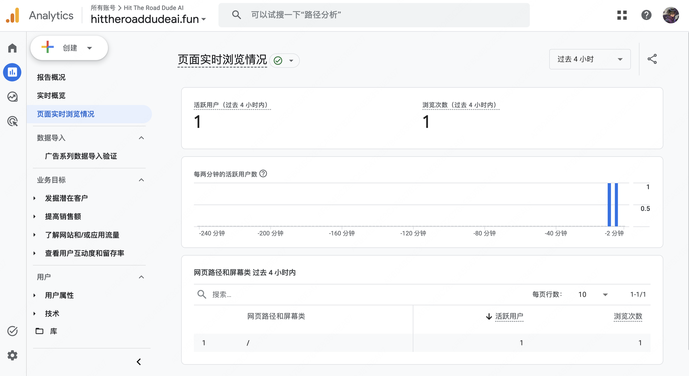
图注：切换到「页面实时浏览情况」后，立即可见活跃用户 1 和首页浏览记录，确认 GA4 彻底跑通。
4. GA4 后台收尾：数据保留期改为 14 个月
GA4 默认只保留 2 个月的明细数据。调通实时数据后，顺手点击左下角齿轮 管理 → 数据收集和修改 → 数据保留，把「事件数据」和「用户数据」的保留期限全部从 2 个月改成 14 个月，保持「有新的用户活动时重置」开启，最后点击左下角蓝色的 保存 按钮。
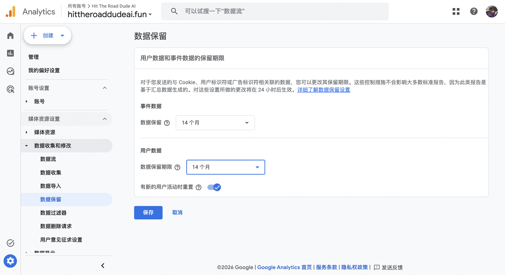
图注：将事件数据与用户数据保留期限均改为「14 个月」，改完务必点左下角蓝色的「保存」按钮使其生效。
至于 sign_up（注册）、generate_video（生成视频）、purchase（购买）这三个核心转化事件，等后续站内真实触发过一次后，再去「管理 → 数据显示 → 事件 / 关键事件」里把它们勾为关键事件即可；Google Signals 与广告关联现阶段保持不开启。
5. 配置 Google Search Console（GSC）并提交站点地图
GA4 负责统计站内用户行为，Google Search Console（GSC）则负责监控网站在 Google 搜索结果里的收录、曝光词和点击量。GA4 调通后紧接着配置 GSC。
5.1 添加「网域」资源（涵盖全部子域与协议）
打开 search.google.com/search-console，在「请选择资源类型」弹窗中选择左侧的 网域（Domain），输入裸域名 hittheroaddudeai.fun（不带 https:// 和斜杠），点击 继续。
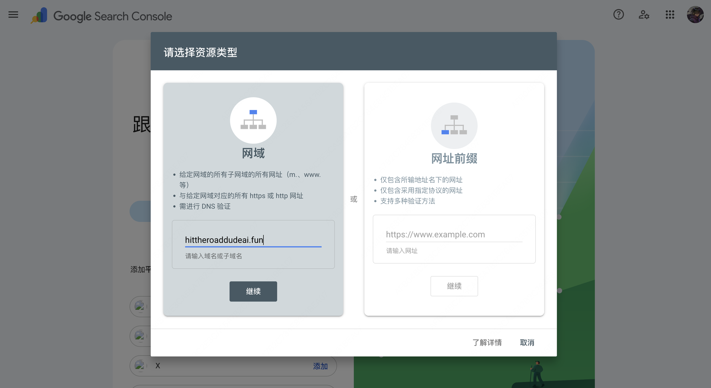
图注：选择左侧「网域」资源类型，输入裸域名 hittheroaddudeai.fun 后点继续。
5.2 跳转 Cloudflare 点击 Authorize 一键写入 TXT 记录
点击开始验证后，GSC 会自动识别域名托管在 Cloudflare 并跳转到 Cloudflare 授权页（Authorize DNS records from Google）。直接点击蓝色的 Authorize 按钮即可——它会自动帮你把 google-site-verification=... 的 TXT 记录写进 DNS，省去手动复制粘贴。
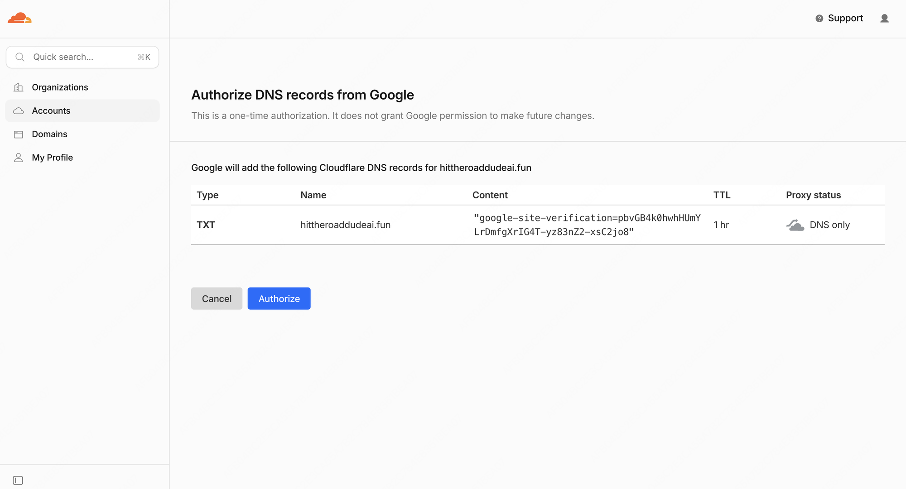
图注：跳转到 Cloudflare 后直接点蓝色的 Authorize，自动完成 DNS TXT 验证记录写入。
5.3 完成所有权验证并进入资源页面
点完 Authorize 后会自动跳回 GSC，弹出绿色的「已完成所有权验证」，点击右下角 前往资源页面。
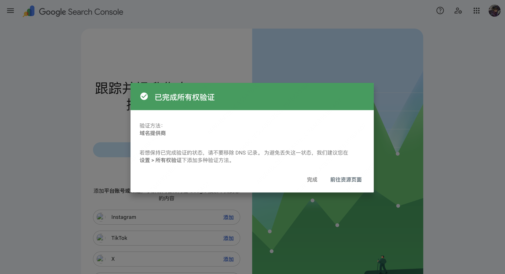
图注：所有权验证通过，点击「前往资源页面」进入 GSC 控制台。
5.4 提交 Sitemap 站点地图
在 GSC 左侧菜单点击 编制索引 → 站点地图（Sitemaps），在「添加新的站点地图」输入框填入完整地址 https://hittheroaddudeai.fun/sitemap.xml，直接点击右侧蓝色的 提交。
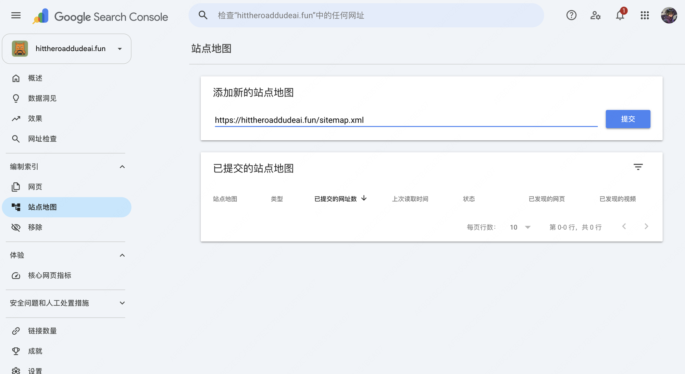
图注：在「站点地图」页填入 https://hittheroaddudeai.fun/sitemap.xml 并点「提交」。
5.5 提交成功后的「无法抓取」假报错说明
提交后会弹出「已成功提交站点地图」。注意看弹窗背后表格里有时会瞬间显示红色的「无法抓取」——这是 GSC 对刚验证新站的常见瞬时显示延迟（后台第一秒还没拉取完）。关掉弹窗后刷新一下浏览器页面（或再点一次提交），状态就会变成绿色的「成功」。
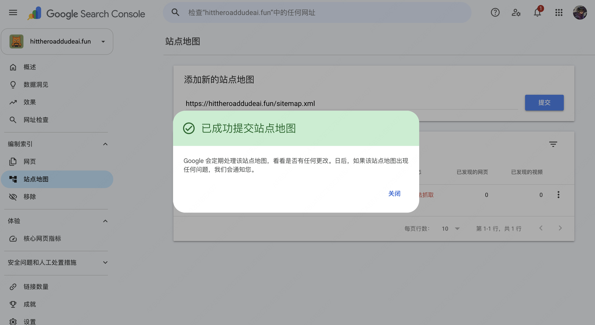
图注：站点地图提交成功；若背景列表刚提交时显示红色「无法抓取」，关闭弹窗刷新页面即恢复正常。
6. 将 Search Console 关联回 GA4（打通自然搜索报表）
最后一步是把刚建好的 GSC 关联到 GA4，这样在 GA4 里也能直接查看自然搜索词与落地页表现。回到 GA4 左下角 管理 → 产品关联 → Search Console 关联，点击右上角蓝色的 关联。
6.1 第 1 步：选择刚验证的 Search Console 媒体资源
点击「选择账号」，勾选刚才验证通过的 hittheroaddudeai.fun（资源类型为「域」），点击右上角蓝色的 确认，然后点「下一步」。
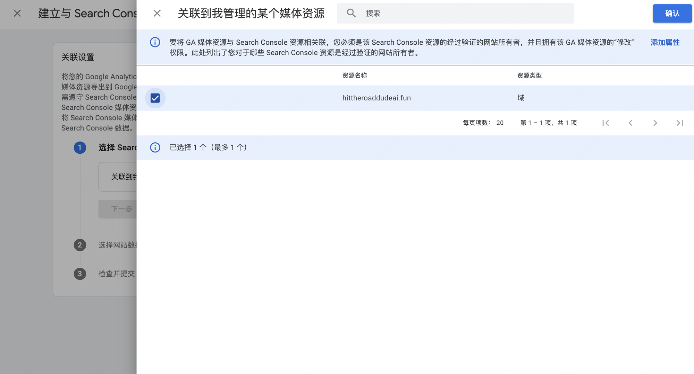
图注：第 1 步：勾选 hittheroaddudeai.fun 域资源，点右上角「确认」。
6.2 第 2 步：选择对应的网站数据流
点击「选择」选中 Web — hittheroaddudeai.fun 数据流，然后点击蓝色的 下一步。
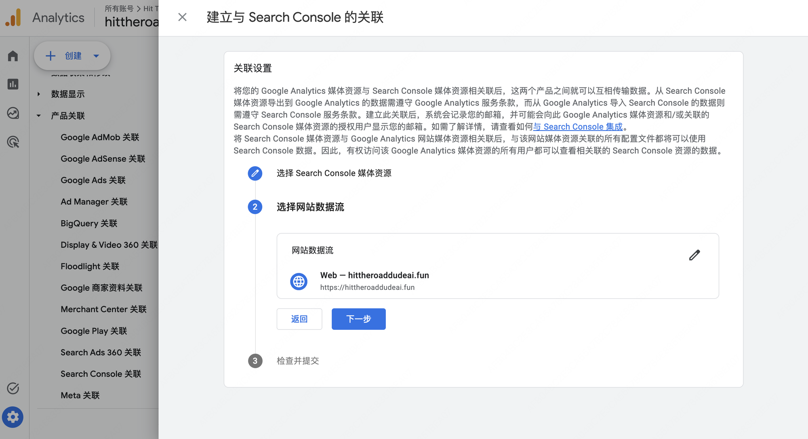
图注：第 2 步：选中网站数据流 Web — hittheroaddudeai.fun 后点「下一步」。
6.3 第 3 步：检查并点击「提交」
进入第 3 步「检查并提交」预览画面后，核对上下两项均为当前站点，务必再点一次底部的蓝色「提交」按钮才算真正落盘。
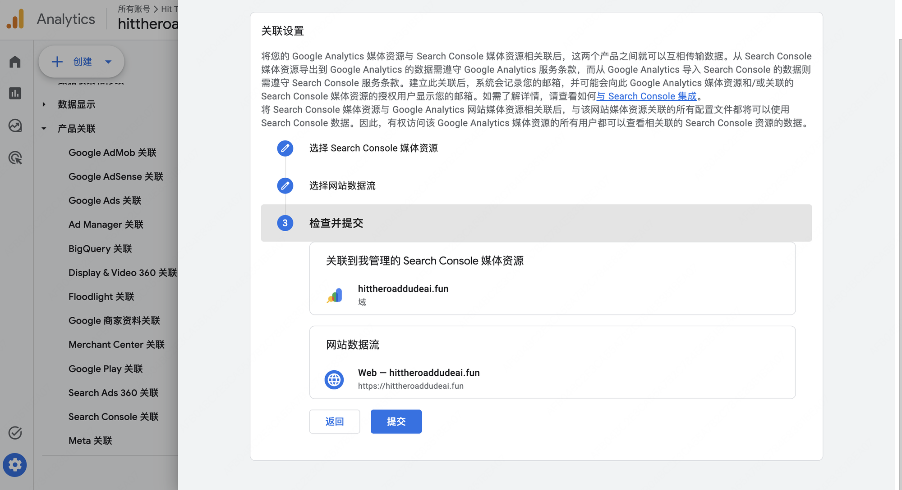
图注：第 3 步：核对媒体资源与数据流无误后，点击底部的「提交」按钮。
6.4 确认显示绿色的「链接已创建」
提交完成后，页面右侧显示绿底标签 链接已创建，至此 GA4 与 Google Search Console 的全套配置与双向关联就 100% 搞定了。
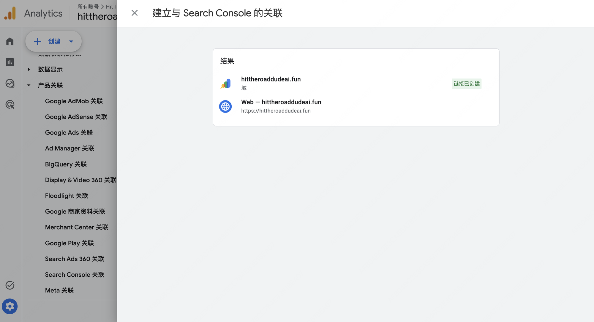
图注：看到绿色的「链接已创建」，代表 GA4 与 GSC 已全部配置完成并打通。
7. 实操高频问题速查表
| 遇到的现象 / 疑问 | 真实原因 | 正确处理方式 |
|---|---|---|
| 需要复制整段 gtag 代码或装 Google Tag Manager 吗？ | 不需要，项目已内置带 Cookie 同意控制的注入逻辑 | 只需把 G- 开头的衡量 ID 填入 src/config/site.ts 的 analytics.ga4Id 并 npm run deploy |
| 无痕窗口点了 Accept、Network 也有 204，为什么「报告概况」没数？ | 当前停在非实时的「报告概况」（汇总表需 24–48 小时），没点进实时页 | 点左侧菜单的 实时概览 或 页面实时浏览情况，立刻能看到活跃用户 1 |
| 增强型衡量第一个「网页浏览量」是灰色的，是不是没开？ | 不是，圆点在右侧代表它是默认常开的基础项 | 保持原样不要动；关掉会导致 SPA 路由切换丢 page_view |
| 数据流顶部提示「网站未启用数据收集功能」怎么办？ | 新建数据流尚未收到线上上报时的默认提示 | 不用管；站点部署并触发一次 Accept 后，实时报表先出数，黄条会在 48 小时内自动消失 |
| GSC 点开始验证后跳到 Cloudflare，直接点 Authorize 吗？ | Google 识别到 Cloudflare DNS 后提供的一键 OAuth 授权 | 直接点蓝色的 Authorize，它会自动添加 TXT 验证记录，无需手动复制粘贴 |
| GSC 提交 sitemap.xml 后弹窗底下显示红色「无法抓取」？ | GSC 对刚提交第一秒的新站常见瞬时假报错 | 线上 sitemap.xml 实测 200 OK；关掉弹窗刷新一下页面就会变成绿色的「成功」 |
| Cloudflare 2.5k 访问、后台 44 会话、GA4 数字为什么对不上？ | 三者统计口径不同：Cloudflare 含爬虫与边缘请求，后台计站内业务会话，GA4 只计点过 Accept 且未开广告拦截的浏览器 | 各司其职：看收入订单用后台，看真人渠道趋势用 GA4，看总请求与爬虫用 Cloudflare，看搜索词收录用 GSC |